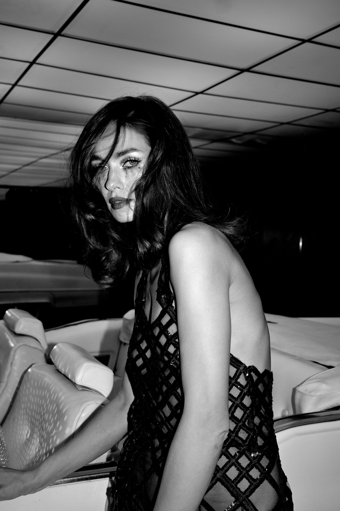

i.

ii.

iii.
Le miroir, avant.
Photographies de W.A. Jones
Le miroir, avant.
Elle est arrivée vêtue
de l'idée que quelqu'un
d'autre se faisait d'elle.
La voiture était déjà là.
La lumière faisait déjà
ce qu'elle voulait faire.
Quelque chose
avait changé.
La pièce était la même.
Elle, non.
l'autre
Elle la tenait comme on tient
quelque chose qu'on sait déjà
devoir poser.
Quelque part dans la pièce,
une conversation avait lieu
dans une langue
qu'elle ne partageait pas avec lui.
Après tout,
juste assise.
Mode : Eli
Photographie : W.A. Jones
New York City